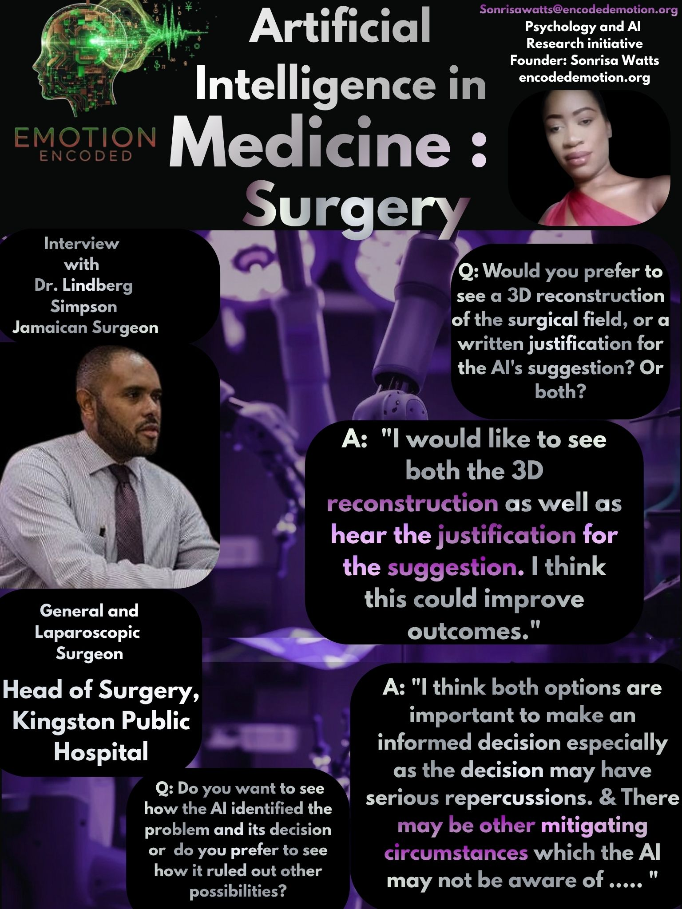

AI Therapist vs AI Financial Advisor: Who Do You Trust More?

I conducted research in the Caribbean Region and got some interesting answers...
Dive deeper into research, interviews, and insights from Emotion Encoded.
““If you invent a breakthrough in artificial intelligence, so machines can learn, that is worth 10 Microsofts.”
— Bill Gates
I conducted research in the Caribbean Region and got some interesting answers...

Emotion Encoded asked “Who would you trust more: a surgeon using an AI tool, or a nurse using an AI tool?” The results were far from unanimous. In our survey of 44 people.. 41 respondents gave these insights: the majority chose none of the above."

Emotion Encoded asked participants "Would you take advice from an AI if it knew your entire personality and history?" Majority said "Maybe". 15.6% said "No, that's creepy."

Emotion Encoded asked "What would you need to know about an AI tool in order to trust it?"
Some of the responses that the majority of participants chose were...

Insights from Dr. Owen on Artificial Intelligence integration into Education
Read More →
Interview with Dr. Aljay Pierre- Cofounder of Telehealth GoDocta
Read More →
Insights from Dr. Vineetha Binoy - Senior Consultant Oncologist
Read More →
As part of my research initiative Emotion Encoded, I asked participants: “Would you be comfortable if your child’s teacher used AI to help with grading or lesson planning?” 53.7% said “yes, but only under conditions”; 26% said “no”; 11% said “yes” without conditions.

Insights into another part of the Emotion Encoded initiative...

When asked to choose between an AI jury or an AI prosecutor, the majority of respondents chose neither. Their responses reveal a deep-seated belief that human empathy is essential to the justice system.

Preview: A Conversation with Dr. Izben Williams on AI, Humanity, and the Mind
Read More →
Insights from Dr. Lindberg Simpson - Dr.Simpson is a Consultant General Laparoscopic and Bariatric Surgeon and He is the current Head of the Surgery department of Kingston Public Hospital and Founding Member of Caribbean Society of Endoscopic Surgeons

Preview: At Emotion Encoded- Senior Attorney-at-law Perspective of AI integration into Law.
Read More →
Dr.Higgins, a Bahamian Interventional Radiologist gives his perspective of Artificial Intelligence in Radiology
Read More →
Featuring Dr Shamir Cawich - Professor of Surgery at UWI Trinidad
Read More →
Featuring Dr. Navi Muradali is the CEO and founder of Patient Connect
Read More →
First Interview with Tech Specialist
Read More →

If AI can’t ‘understand’ emotions, why do we trust it with life-altering money decisions? My research suggests it’s not about capability! It’s about the perceived risk.

🤗 St. Kitts & Nevis 🤗 What happens to trust when professionals rely on AI but don’t disclose it?

A Conversation with a Nevisian Clinical Psychologist and Founder of Respite
Read More →
Insights from a Seasoned Lawyer: The Reality of AI
Read More →
Insights from Ms. Sasha Lloyd on the truth of AI integration.
Read More →

Insights from a Physician in Internal Medicine.
Read More →
🤗 St. Kitts & Nevis 🤗 Counselor's Perception on AI.

🤗 St. Kitts & Nevis 🤗 Exploring the humanization of artificial intelligence.

Featuring Dr. Dwain Archibald, District Medical Officer.
Read More →
🤗 St. Kitts & Nevis 🤗 Young General Practitioner's Perception on AI.

Dr. Warren Grayson, Professor at Johns Hopkins, discusses how AI can augment creativity and predict healing in tissue engineering.

Do we trust AI with our money more than our health? Insight into the high-stakes trust paradox.

Consultant Physician Dr. Bichara Sahely shares his perspective on the promises and pitfalls of AI in medicine.

If your doctor used an AI tool that made a mistake, who would you hold responsible?

Our survey of 41 participants revealed a surprising truth about how people react when AI conflicts with professional legal advice.

Financial professional Alex Straun exposes a fundamental paradox moving beyond the hype of AI in fintech.

Our survey reveals a struggle with trust as patients navigate conflicting AI recommendations and medical advice.

Exploring the promises and pitfalls of over-reliance on AI in the early stages of a medical career.

Mr. Enoete Inanga provides sharp insight into the technical and ethical realities of high-stakes AI deployment.

Lawyer Gumbs warns against elevating AI into a position of authority within legal reasoning.
Read More →
A comprehensive look at societal fears and expectations regarding workforce automation.
Read More →
An interview discussing the mental and emotional shifts as we integrate AI into daily decision-making.
Read More →